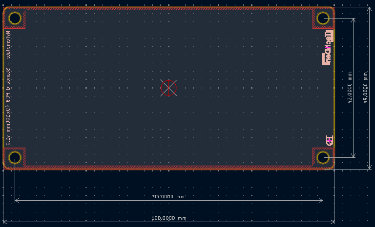
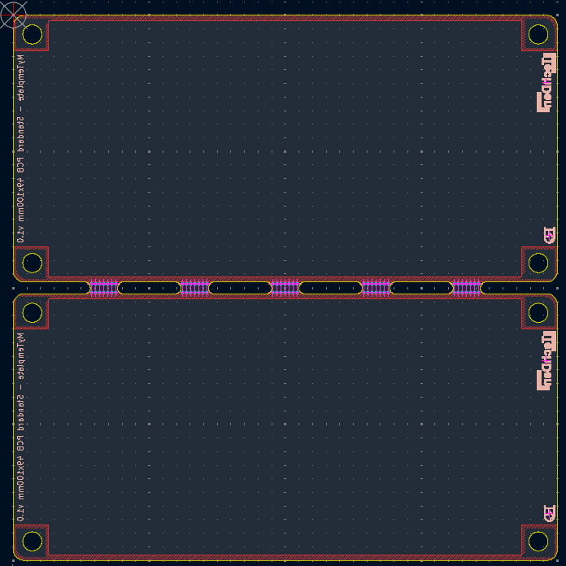

This is a template for a 49x100mm Panel PCB
1 - The schematic is already filled with the standard components and its footprints
2 - The Panel PCB has a size of 49mm*100mm to fit 2x PCBs as part of a 100 × 100mm production panel
The final PCB looks like the following:

Instructions for making a 100mm*100mm production panel with 2x w49x100mm Panel PCBs:
Open PCB Editor (standalone)
Start Kikit panelizing tool by clicking the menu button
Import in KiKit; C:\Dropbox\myKiCadFiles\MyKiKit Panel-Template/KiKit panelize 2x Panel PCB w49x100mm.json
Browse input file
Browse Output file
Click Panelize

2026 Roland van Dalen